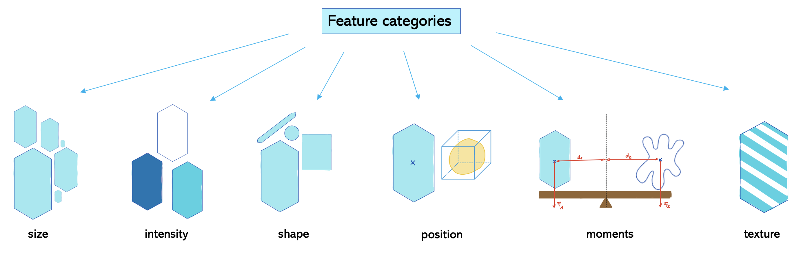

Statistiques utilisant Scikit-image#
Nous pouvons utiliser scikit-image pour extraire des caractéristiques d’images étiquetées. Pour des raisons de commodité, nous utilisons la bibliothèque napari-skimage-regionprops.
Avant de pouvoir effectuer des mesures, nous avons besoin d’une image et d’une image_étiquetée correspondante. Par conséquent, nous récapitulons le filtrage, le seuillage et l’étiquetage :
from skimage.io import imread
from skimage import filters
from skimage import measure
from napari_skimage_regionprops import regionprops_table
from pyclesperanto_prototype import imshow
import pandas as pd
import numpy as np
import pyclesperanto_prototype as cle
# load image
image = imread("../../data/blobs.tif")
# denoising
blurred_image = filters.gaussian(image, sigma=1)
# binarization
threshold = filters.threshold_otsu(blurred_image)
thresholded_image = blurred_image >= threshold
# labeling
label_image = measure.label(thresholded_image)
# visualization
imshow(label_image, labels=True)
Mesures / propriétés des régions#
Nous utilisons maintenant la fonction très pratique regionprops_table. Elle fournit des caractéristiques basées sur la liste des mesures regionprops de la bibliothèque scikit-image. Vérifions d’abord ce que nous devons fournir pour cette fonction :
regionprops_table?
Signature:
regionprops_table(
image: 'napari.types.ImageData',
labels: 'napari.types.LabelsData',
size: bool = True,
intensity: bool = True,
perimeter: bool = False,
shape: bool = False,
position: bool = False,
moments: bool = False,
napari_viewer: 'napari.Viewer' = None,
) -> 'pandas.DataFrame'
Docstring: Adds a table widget to a given napari viewer with quantitative analysis results derived from an image-label pair.
File: c:\users\maral\mambaforge\envs\feature_blogpost\lib\site-packages\napari_skimage_regionprops\_regionprops.py
Type: function
Nous voyons que nous devons spécifier quelles catégories de caractéristiques nous voulons mesurer. Une façon de diviser ces catégories est montrée ici :

Les catégories de caractéristiques qui sont définies sur True sont mesurées par défaut. Dans ce cas, les catégories sont size et intensity. Mais perimeter et shape seraient également intéressants à étudier. Nous devons donc les définir également sur True.
df = pd.DataFrame(regionprops_table(image , label_image,
perimeter = True,
shape = True,
position=True,
moments=True))
df
| label | area | bbox_area | equivalent_diameter | convex_area | max_intensity | mean_intensity | min_intensity | perimeter | perimeter_crofton | ... | moments_hu-1 | moments_hu-2 | moments_hu-3 | moments_hu-4 | moments_hu-5 | moments_hu-6 | standard_deviation_intensity | aspect_ratio | roundness | circularity | |
|---|---|---|---|---|---|---|---|---|---|---|---|---|---|---|---|---|---|---|---|---|---|
| 0 | 1 | 429 | 750 | 23.371345 | 479 | 232.0 | 191.440559 | 128.0 | 89.012193 | 87.070368 | ... | 0.018445 | 0.000847 | 1.133411e-04 | 1.205336e-08 | -2.714451e-06 | 3.298765e-08 | 29.793138 | 2.088249 | 0.451572 | 0.680406 |
| 1 | 2 | 183 | 231 | 15.264430 | 190 | 224.0 | 179.846995 | 128.0 | 53.556349 | 53.456120 | ... | 0.010549 | 0.001177 | 6.734903e-05 | -1.483503e-08 | -5.401836e-06 | -1.180484e-08 | 21.270534 | 1.782168 | 0.530849 | 0.801750 |
| 2 | 3 | 658 | 756 | 28.944630 | 673 | 248.0 | 205.604863 | 120.0 | 95.698485 | 93.409370 | ... | 0.000113 | 0.000104 | 1.146642e-06 | 4.801450e-13 | 9.889775e-09 | -1.248247e-11 | 29.392255 | 1.067734 | 0.918683 | 0.902871 |
| 3 | 4 | 433 | 529 | 23.480049 | 445 | 248.0 | 217.515012 | 120.0 | 77.455844 | 76.114262 | ... | 0.000096 | 0.000348 | 3.349309e-07 | -3.612652e-12 | 2.526209e-09 | -9.198337e-14 | 35.852345 | 1.061942 | 0.917813 | 0.906963 |
| 4 | 5 | 472 | 551 | 24.514670 | 486 | 248.0 | 213.033898 | 128.0 | 83.798990 | 82.127941 | ... | 0.005876 | 0.000072 | 4.356690e-06 | -6.223212e-11 | -3.178823e-07 | 4.522442e-11 | 28.741080 | 1.579415 | 0.621952 | 0.844645 |
| ... | ... | ... | ... | ... | ... | ... | ... | ... | ... | ... | ... | ... | ... | ... | ... | ... | ... | ... | ... | ... | ... |
| 57 | 58 | 213 | 285 | 16.468152 | 221 | 224.0 | 184.525822 | 120.0 | 52.284271 | 52.250114 | ... | 0.001745 | 0.000002 | 1.126452e-07 | 5.814575e-14 | 4.625041e-09 | -6.410600e-15 | 28.255467 | 1.296143 | 0.771094 | 0.979146 |
| 58 | 59 | 79 | 108 | 10.029253 | 84 | 248.0 | 184.810127 | 128.0 | 39.313708 | 39.953250 | ... | 0.056792 | 0.001777 | 1.725200e-04 | -5.364882e-08 | -2.906455e-05 | -7.903632e-08 | 33.739912 | 3.173540 | 0.300766 | 0.642316 |
| 59 | 60 | 88 | 110 | 10.585135 | 92 | 216.0 | 182.727273 | 128.0 | 45.692388 | 46.196967 | ... | 0.097966 | 0.002268 | 2.994111e-04 | -1.724577e-08 | -3.731912e-05 | -2.461160e-07 | 24.417173 | 4.021193 | 0.238521 | 0.529669 |
| 60 | 61 | 52 | 75 | 8.136858 | 56 | 248.0 | 189.538462 | 128.0 | 30.692388 | 32.924135 | ... | 0.046813 | 0.003694 | 3.041106e-04 | -2.539652e-07 | -5.698262e-05 | -1.984555e-07 | 37.867411 | 2.839825 | 0.322190 | 0.693668 |
| 61 | 62 | 48 | 68 | 7.817640 | 53 | 224.0 | 173.833333 | 128.0 | 33.071068 | 35.375614 | ... | 0.125246 | 0.004295 | 1.300612e-03 | 2.775191e-06 | 3.027878e-04 | 1.321910e-06 | 27.987596 | 4.417297 | 0.213334 | 0.551512 |
62 rows × 86 columns
Comme vous pouvez le voir, nous avons maintenant de nombreuses caractéristiques à étudier. Nous pouvons imprimer tous les noms de caractéristiques avec la fonction keys :
print(df.keys())
Index(['label', 'area', 'bbox_area', 'equivalent_diameter', 'convex_area',
'max_intensity', 'mean_intensity', 'min_intensity', 'perimeter',
'perimeter_crofton', 'extent', 'local_centroid-0', 'local_centroid-1',
'solidity', 'feret_diameter_max', 'major_axis_length',
'minor_axis_length', 'orientation', 'eccentricity', 'centroid-0',
'centroid-1', 'bbox-0', 'bbox-1', 'bbox-2', 'bbox-3',
'weighted_centroid-0', 'weighted_centroid-1', 'moments-0-0',
'moments-0-1', 'moments-0-2', 'moments-0-3', 'moments-1-0',
'moments-1-1', 'moments-1-2', 'moments-1-3', 'moments-2-0',
'moments-2-1', 'moments-2-2', 'moments-2-3', 'moments-3-0',
'moments-3-1', 'moments-3-2', 'moments-3-3', 'moments_normalized-0-0',
'moments_normalized-0-1', 'moments_normalized-0-2',
'moments_normalized-0-3', 'moments_normalized-1-0',
'moments_normalized-1-1', 'moments_normalized-1-2',
'moments_normalized-1-3', 'moments_normalized-2-0',
'moments_normalized-2-1', 'moments_normalized-2-2',
'moments_normalized-2-3', 'moments_normalized-3-0',
'moments_normalized-3-1', 'moments_normalized-3-2',
'moments_normalized-3-3', 'moments_central-0-0', 'moments_central-0-1',
'moments_central-0-2', 'moments_central-0-3', 'moments_central-1-0',
'moments_central-1-1', 'moments_central-1-2', 'moments_central-1-3',
'moments_central-2-0', 'moments_central-2-1', 'moments_central-2-2',
'moments_central-2-3', 'moments_central-3-0', 'moments_central-3-1',
'moments_central-3-2', 'moments_central-3-3', 'moments_hu-0',
'moments_hu-1', 'moments_hu-2', 'moments_hu-3', 'moments_hu-4',
'moments_hu-5', 'moments_hu-6', 'standard_deviation_intensity',
'aspect_ratio', 'roundness', 'circularity'],
dtype='object')
Et describe nous donne des statistiques de base comme max, mean, min et std de chaque caractéristique :
df.describe()
| label | area | bbox_area | equivalent_diameter | convex_area | max_intensity | mean_intensity | min_intensity | perimeter | perimeter_crofton | ... | moments_hu-1 | moments_hu-2 | moments_hu-3 | moments_hu-4 | moments_hu-5 | moments_hu-6 | standard_deviation_intensity | aspect_ratio | roundness | circularity | |
|---|---|---|---|---|---|---|---|---|---|---|---|---|---|---|---|---|---|---|---|---|---|
| count | 62.000000 | 62.000000 | 62.000000 | 62.000000 | 62.000000 | 62.000000 | 62.000000 | 62.000000 | 62.000000 | 62.000000 | ... | 62.000000 | 6.200000e+01 | 6.200000e+01 | 6.200000e+01 | 6.200000e+01 | 6.200000e+01 | 62.000000 | 62.000000 | 62.000000 | 62.000000 |
| mean | 31.500000 | 355.370968 | 475.677419 | 20.074583 | 372.790323 | 233.548387 | 190.429888 | 125.161290 | 67.787235 | 67.071263 | ... | 0.012854 | 5.166382e-04 | 7.053581e-05 | 5.855846e-08 | 3.633047e-06 | -8.703715e-09 | 28.689171 | 1.637991 | 0.692418 | 0.894101 |
| std | 18.041619 | 211.367385 | 300.328169 | 7.091876 | 223.801078 | 19.371838 | 15.382559 | 4.602898 | 25.008581 | 23.507575 | ... | 0.027066 | 1.077748e-03 | 2.093454e-04 | 3.687535e-07 | 3.998053e-05 | 2.897240e-07 | 6.127700 | 0.794366 | 0.210973 | 0.183024 |
| min | 1.000000 | 7.000000 | 9.000000 | 2.985411 | 7.000000 | 152.000000 | 146.285714 | 112.000000 | 6.828427 | 9.155272 | ... | 0.000056 | 2.514436e-07 | 6.992073e-09 | -2.539652e-07 | -5.698262e-05 | -1.757113e-06 | 5.598834 | 1.048053 | 0.213334 | 0.529669 |
| 25% | 16.250000 | 194.750000 | 260.000000 | 15.745692 | 204.750000 | 232.000000 | 182.969505 | 120.000000 | 52.602291 | 52.551616 | ... | 0.000627 | 3.032838e-05 | 1.242304e-07 | -1.881559e-13 | -1.039790e-08 | -7.811552e-13 | 26.514258 | 1.168451 | 0.538616 | 0.805774 |
| 50% | 31.500000 | 366.000000 | 448.500000 | 21.585875 | 376.500000 | 240.000000 | 190.749492 | 128.000000 | 69.112698 | 68.204464 | ... | 0.001971 | 6.198102e-05 | 5.957846e-07 | 6.176303e-14 | 5.408146e-10 | -9.288753e-15 | 29.017801 | 1.316003 | 0.757485 | 0.925560 |
| 75% | 46.750000 | 500.750000 | 685.500000 | 25.250050 | 516.500000 | 248.000000 | 199.725305 | 128.000000 | 86.097980 | 84.307520 | ... | 0.010151 | 3.475818e-04 | 3.799021e-05 | 1.135209e-11 | 1.484276e-08 | 1.902152e-12 | 32.534123 | 1.769976 | 0.851463 | 0.966037 |
| max | 62.000000 | 896.000000 | 1350.000000 | 33.776066 | 977.000000 | 248.000000 | 220.026144 | 136.000000 | 129.982756 | 125.912897 | ... | 0.125246 | 5.440067e-03 | 1.300612e-03 | 2.775191e-06 | 3.027878e-04 | 1.321910e-06 | 38.323999 | 4.417297 | 0.974824 | 1.886542 |
8 rows × 86 columns
Exercices#
Faites un tableau avec seulement solidity, circularity et roundness.